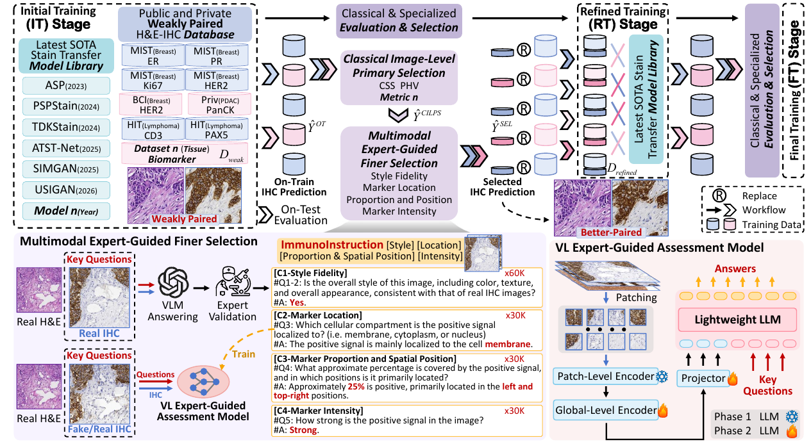
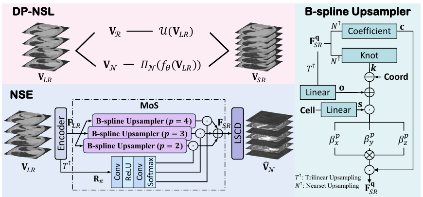
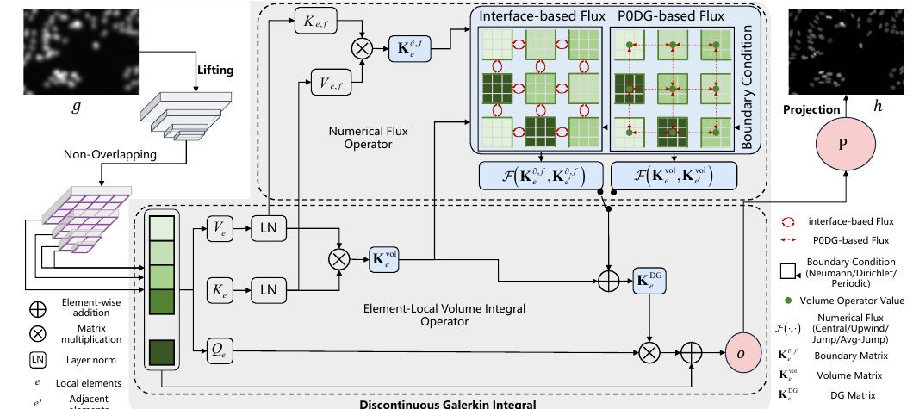
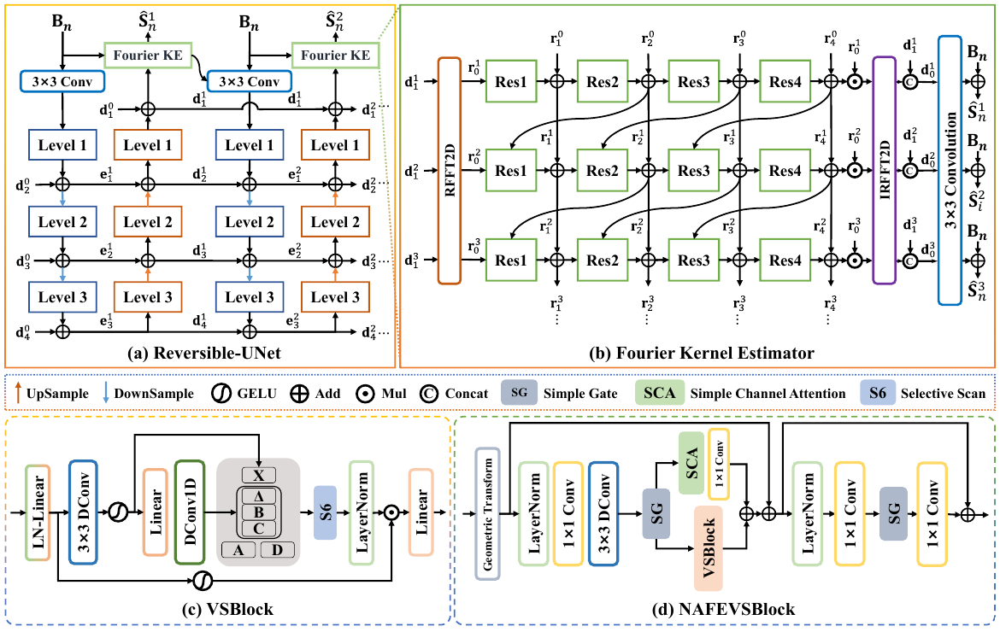
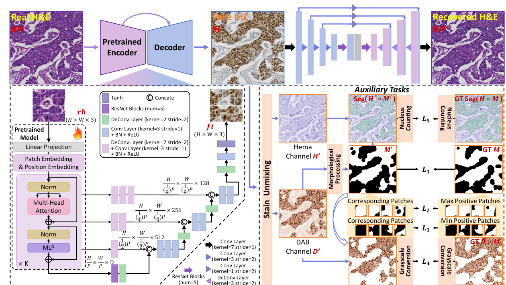
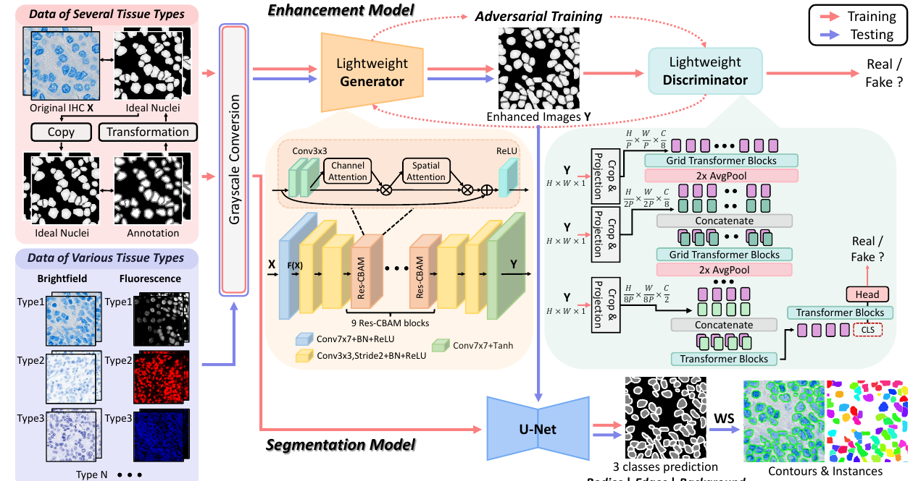
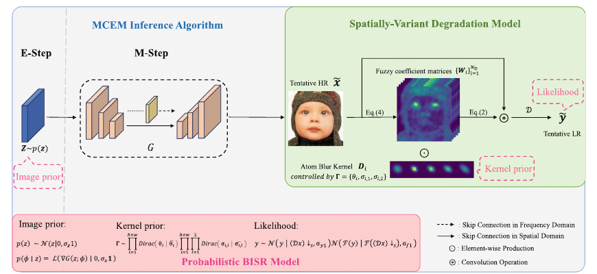
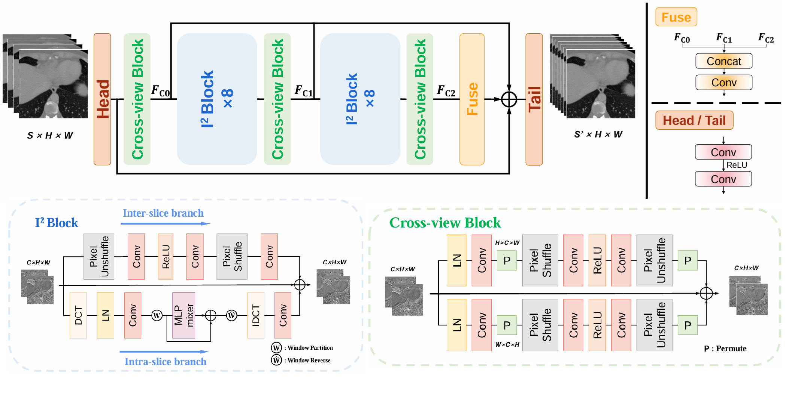

Haofei Song (宋昊飞)
I am a Ph.D. student at East China Normal University, advised by Prof. Yan Wang. My research interests include image restoration, vision-language models, and AI for biology.
Before starting my Ph.D., I received my master's degree from East China Normal University, advised by Prof. Yan Wang. And I worked as a research intern at Huawei (2024-2025).
Publications

Dual-Prior Guided Null-Space Learning with Mixture-of-Splines for Arbitrary Medical Slice Super-Resolution
European Conference on Computer Vision (ECCV), 2026

Discontinuous Galerkin Neural Operator for Pathology Defocus Deblurring
International Conference on Machine Learning (ICML), 2026


Advancing Stain Transfer for Multi-Biomarkers: A Human Annotation-Free Method Based on Auxiliary Task Supervision
International Joint Conference on Artificial Intelligence (IJCAI), 2025

GeNSeg-Net: A General Segmentation Framework for Any Nucleus in Immunohistochemistry Images
ACM Multimedia (ACM MM), 2024

Spatially-Variant Degradation Model for Dataset-Free Super-Resolution
European Conference on Computer Vision (ECCV), 2024

I³Net: Inter-Intra-Slice Interpolation Network for Medical Slice Synthesis
IEEE Transactions on Medical Imaging (TMI), 2024
Internship
Huawei Research on vision-language models and interactive open-world object detection. 2024.07-2025.06
Selected Honors
- 2025 National Second Prize, 19th “Challenge Cup” Competition
- 2025 Shanghai Grand Prize, 19th “Challenge Cup” Competition
- 2025 Outstanding Master's Thesis, East China Normal University
- 2025 Outstanding Graduate, East China Normal University